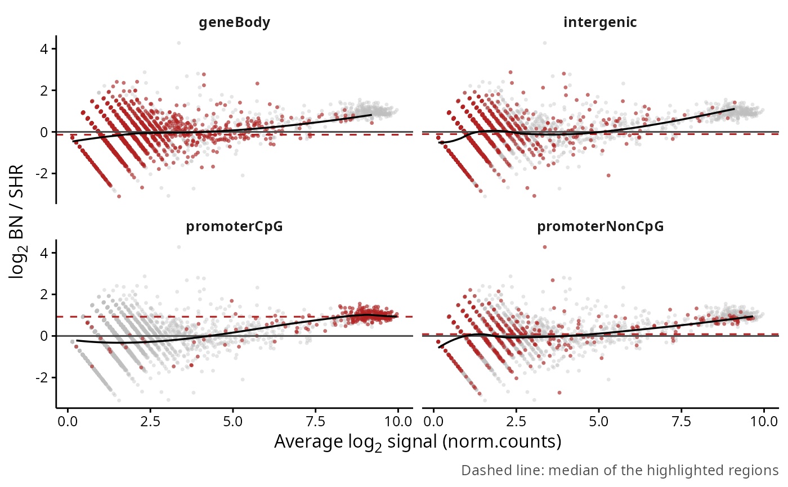
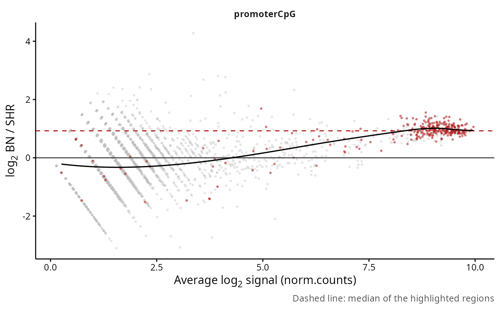

Draws the log ratio of two groups of samples against their average abundance, with the regions of a set highlighted over the others. A set whose cloud sits away from zero while the rest stays on it is the picture the package is built to produce, and seeing it before any test tells whether the normalisation has already decided the answer.
plotSetMA(
counts,
set = NULL,
groupBy = NULL,
contrast = NULL,
assayName = NULL,
priorCount = 1,
minCount = 1,
showTrend = TRUE,
showMedian = TRUE,
highlightColor = "#B22222",
backgroundColor = "gray75",
pointSize = 1.2,
maxPoints = 10000,
facetScales = "fixed",
title = NULL,
returnData = FALSE
)RegionSetDE.counts object, normalised by normalizeCounts.
Character vector with the names of the region sets to highlight. Default: NULL, one panel per set with the others greyed behind.
String with the name of the colData column defining the groups. Default: NULL, accepted only when the object holds two samples.
Character vector of length two with the levels of groupBy to compare, given as c(numerator, denominator). Default: NULL, the two levels found in the column, in alphabetical order.
String with the assay to plot. Default: NULL, the normalised assay recorded by normalizeCounts, or the raw counts when the object has not been normalised.
Numeric value added to the values before the log transformation. Default: 1.
Numeric value with the minimum total count required to draw a region. Default: 1.
Logical value indicating whether a loess trend must be drawn over the highlighted regions. Default: TRUE.
Logical value indicating whether the median log ratio of the highlighted regions must be drawn as a dashed line. Default: TRUE.
String with the colour of the highlighted regions. Default: "#B22222".
String with the colour of the other regions. Default: "gray75".
Numeric value with the size of the points. Default: 1.2.
Numeric value with the maximum number of points used for the grey backdrop and for the trend fit, thinned at regular intervals when exceeded. The highlighted regions are always drawn in full. Default: 10000.
String passed to the facets, one among "fixed", "free", "free_x" or "free_y". Default: "fixed".
String with the title of the plot. Default: NULL, no title.
Logical value indicating whether the table behind the plot must be returned instead of the plot. Default: FALSE.
A ggplot object, or a data.frame when returnData is TRUE.
The ratio is computed on the mean of each group, so it carries no dispersion estimate and no test, it only shows where the regions sit. When the object has not been normalised the plot runs on the raw counts and a global offset between the groups is expected, that offset is what the normalisation removes.
The median line is the number to read: a set whose median sits at zero behaves like the rest of the genome under the chosen normalisation, whichever way the individual regions scatter. When every set shares the same non zero median, the shift belongs to the normalisation rather than to the biology.
counts <- loadExampleData("counts", verbose = FALSE)
counts <- normalizeCounts(counts, method = "background", verbose = FALSE)
# One panel per region set, each against the rest of the data
plotSetMA(counts, groupBy = "condition")

plotSetMA(counts, set = "promoterCpG", groupBy = "condition")
